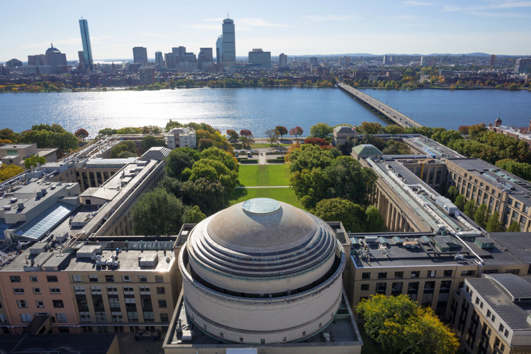

Massachusetts Institute of Technology

Introduce
The Massachusetts Institute of Technology (MIT) is a private research university in Cambridge, Massachusetts, United States. Established in 1861, MIT has played a significant role in the development of many areas of modern technology and science.
Founded in response to the increasing industrialization of the United States, MIT adopted a European polytechnic university model and stressed laboratory instruction in applied science and engineering. MIT is one of three private land-grant universities in the United States, the others being Cornell University and Tuskegee University. The institute has an urban campus that extends more than a mile (1.6 km) alongside the Charles River, and operates off-campus facilities including the MIT Lincoln Laboratory, the Bates Center, and the Haystack Observatory, as well as affiliated laboratories such as the Broad and Whitehead Institutes.
As of October 2024, 105 Nobel laureates, 26 Turing Award winners, and 8 Fields Medalists have been affiliated with MIT as alumni, faculty members, or researchers. In addition, 58 National Medal of Science recipients, 29 National Medals of Technology and Innovation recipients, 50 MacArthur Fellows, 83 Marshall Scholars, 41 astronauts, 16 Chief Scientists of the US Air Force, and 1 foreign head of state have been affiliated with MIT. The institute also has a strong entrepreneurial culture and MIT alumni have founded or co-founded many notable companies. MIT is a member of the Association of American Universities.
History
In 1859, a proposal was submitted to the Massachusetts General Court to use newly filled lands in Back Bay, Boston for a "Conservatory of Art and Science", but the proposal failed. A charter for the incorporation of the Massachusetts Institute of Technology, proposed by William Barton Rogers, was signed by John Albion Andrew, the governor of Massachusetts, on April 10, 1861.
Two days after MIT was chartered, the first battle of the Civil War broke out. After a long delay through the war years, MIT's first classes were held in the Mercantile Building in Boston in 1865. The new institute was founded as part of the Morrill Land-Grant Colleges Act to fund institutions "to promote the liberal and practical education of the industrial classes" and was a land-grant school. In 1863 under the same act, the Commonwealth of Massachusetts founded the Massachusetts Agricultural College, which developed as the University of Massachusetts Amherst. In 1866, the proceeds from land sales went toward new buildings in the Back Bay
MIT was informally called "Boston Tech". The institute adopted the European polytechnic university model and emphasized laboratory instruction from an early date. Despite chronic financial problems, the institute saw growth in the last two decades of the 19th century under President Francis Amasa Walker. Programs in electrical, chemical, marine, and sanitary engineering were introduced, new buildings were built, and the size of the student body increased to more than one thousand.
Campus
MIT's 166-acre (67.2 ha) campus in the city of Cambridge spans approximately a mile along the north side of the Charles River basin. The campus is divided roughly in half by Massachusetts Avenue, with most dormitories and student life facilities to the west and most academic buildings to the east. The bridge closest to MIT is the Harvard Bridge, which is known for being marked off in a non-standard unit of length – the smoot.
The Kendall/MIT MBTA Red Line station is located on the northeastern edge of the campus, in Kendall Square. The Cambridge neighborhoods surrounding MIT are a mixture of high tech companies occupying both modern office and rehabilitated industrial buildings, as well as socio-economically diverse residential neighborhoods. In early 2016, MIT presented its updated Kendall Square Initiative to the City of Cambridge, with plans for mixed-use educational, retail, residential, startup incubator, and office space in a dense high-rise transit-oriented development plan. The MIT Museum has moved immediately adjacent to a Kendall Square subway entrance, joining the List Visual Arts Center on the eastern end of the campus.
Each building at MIT has a number (possibly preceded by a W, N, E, or NW) designation, and most have a name as well. Typically, academic and office buildings are referred to primarily by number while residence halls are referred to by name. The organization of building numbers roughly corresponds to the order in which the buildings were built and their location relative (north, west, and east) to the original center cluster of Maclaurin buildings.[123] Many of the buildings are connected above ground as well as through an extensive network of tunnels, providing protection from the Cambridge weather as well as a venue for roof and tunnel hacking.
Academics
MIT is a large, highly residential, research university with a majority of enrollments in graduate and professional programs. The university has been accredited by the New England Association of Schools and Colleges since 1929. MIT operates on a 4–1–4 academic calendar with the fall semester beginning after Labor Day and ending in mid-December, a 4-week "Independent Activities Period" in the month of January, and the spring semester commencing in early February and ceasing in late May.
MIT students refer to both their majors and classes using numbers or acronyms alone. Departments and their corresponding majors are numbered in the approximate order of their foundation; for example, Civil and Environmental Engineering is Course 1, while Linguistics and Philosophy is Course 24. Students majoring in Electrical Engineering and Computer Science (EECS), the most popular department, collectively identify themselves as "Course 6". MIT students use a combination of the department's course number and the number assigned to the class to identify their subjects; for instance, the introductory calculus-based classical mechanics course is simply "8.01" (pronounced eight-oh-one) at MIT.
Rankings
MIT places among the top five in many overall rankings of universities and rankings based on students' revealed preferences. For several years, U.S. News & World Report, the QS World University Rankings, and the Academic Ranking of World Universities have ranked MIT's School of Engineering first, as did the 1995 National Research Council report. In the same lists, MIT's strongest showings apart from in engineering are in computer science, the natural sciences, business, architecture, economics, linguistics, mathematics, and, to a lesser extent, political science and philosophy.
Contact Us
Massachusetts Institute of Technology, 77 Massachusetts Avenue, Cambridge, MA 02139, USA617-253-1000
TDD/TTY, use TRS (711)
more information in wikipedia